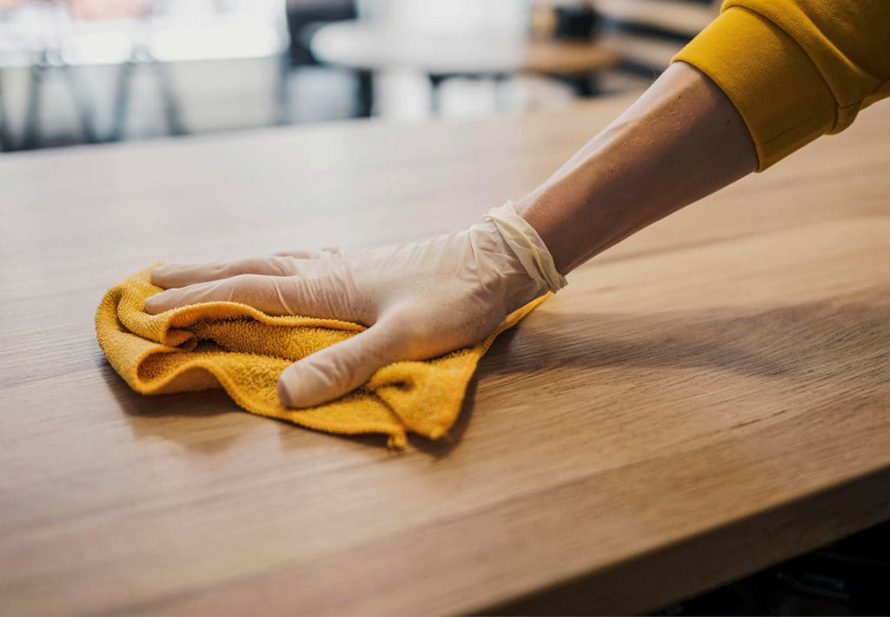
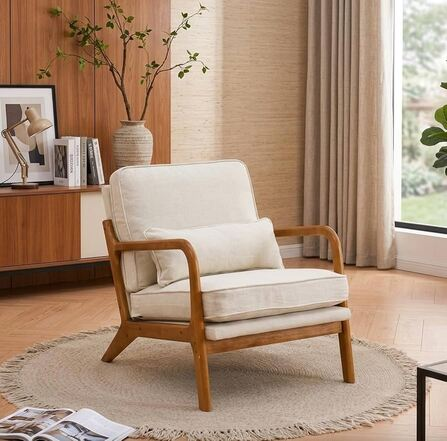
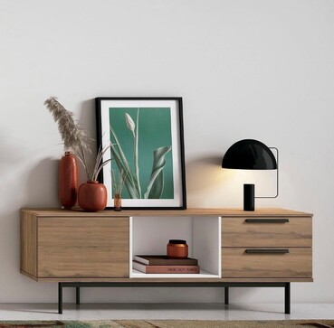

Muebles de Madera
Consejos para limpiar, proteger y darle mantenimiento a tus muebles de madera sin dañar el acabado.
Todo sobre el mantenimiento de tus muebles y las últimas tendencias en decoración de interiores

Consejos para limpiar, proteger y darle mantenimiento a tus muebles de madera sin dañar el acabado.

Cómo eliminar manchas y mantener la tela de tus sillones y sofás en buen estado por más tiempo.

Evita la oxidación y conserva el brillo de tus piezas metálicas con estos tips prácticos.
IKEA: guía práctica para limpiar y cuidar muebles de madera según el tipo (pino, roble, bambú y más).
Westwing: consejos de expertos para limpiar el sofá y cuidar la tapicería.
Leroy Merlin: paso a paso para eliminar y prevenir el óxido en muebles metálicos.
IKEA: cómo decorar un salón pequeño aprovechando cada rincón.
El Mueble: consejos de expertos para combinar colores en la decoración de interiores.
Arquitectura y Diseño: las 20 tendencias de decoración que marcarán 2026.